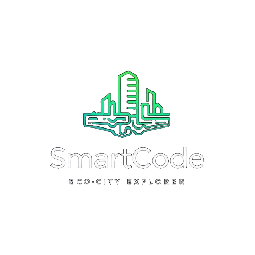

Ключови екологични метрики на нашия умен град, обновявани динамично.
Кликни върху зона, за да научиш повече и да я добавиш в своя Зелен дневник.
Събирай значки, докато изследваш различни зони на умния град.
Научете повече за зелените технологии и устойчивия начин на живот.